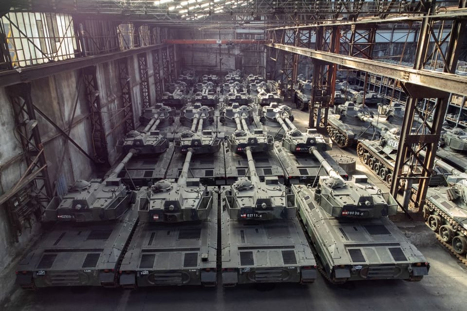

世界苦茶06月28日新闻 | 37条 | 美最高院大幅支持特朗普议程

美最高院大幅支持特朗普议程 | 中国工业企业利润下滑 | 特斯拉完成一次无人交付 | 台汉光演戏时间延长 | 上合组织防长会议印度拒绝签署声明
今日三条新闻分析
苦茶数据
美元兑人民币：7.17（昨日7.17，前日7.16）
美元兑日元：144.88（昨日144.54，前日145.36）
上证指数：休市（昨日3424，前日3453）
标普500指数：休市（昨日6173，前日6181）
比特币：107431（昨日107298，前日107775）
布伦特原油：67.77（昨日67.57，前日67.94）
以伊战争
（明天以伊战争板块并入国际新闻）
• 以军曾深入伊朗作战 ：以色列军方证实，在与伊朗交战12天期间，以军突击队曾深入伊朗境内展开秘密行动，而且得到美国情报机构的支持。伊朗已逮捕多名涉嫌为以色列充当间谍的人，并加强境内镇压力度，以防止以方特工和境内反对派利用紧张局势煽动内乱。以色列国防军总参谋长扎米尔周三发表电视讲话时说，以军全面实现了对伊朗发动军事行动的目标，包括伊朗的核计划因受到“系统性破坏”而倒退了数年。“这要归功于我们的空军和地面突击队进行的协调和战术诈诱。这些部队深入敌方领土秘密行动，为我们制造了行动自由。”
中国新闻
• 无3C充电宝禁带登机 ：中国民航星期六起实施新规，禁止旅客携带无“3C”标识的充电宝登机。北京与上海多家机场强调，该规定仅适用于充电宝，相机锂电池的安检要求并未调整。中国民航局星期四在官网发布公告，宣布从星期六起禁止旅客携带没有3C标识、标识不清晰，已被召回型号或批次的充电宝搭乘境内航班。不过，有网民星期五在微博发文称，安检时其数码相机电池因未贴3C标识也被拒登机。
• 香港拟增设7千天眼 ：香港保安局局长邓炳强说，政府计划在未来两年内每年最多增设7000个闭路电视摄像头，并将配备人脸识别技术。综合《星岛日报》和网媒“香港01”报道，邓炳强星期四受访时说，香港警方会持续扩大闭路电视系统的覆盖范围，以协助打击罪案。他透露，香港警方去年在罪案较多及人流密集地区安装615组俗称“天眼”的街头闭路电视，协助破获122宗案件，拘捕202人。截至目前，“天眼”系统已协助侦破超过300宗案件，拘捕近600人。
• 中方批北约借口东进 ：针对北约对中国扩张军力的指控，中国国防部说，坚决反对北约拿中国当借口“东进亚太”。据中国国防部官网，国防部新闻发言人张晓刚星期四下午在记者会上说，北约应反躬自省、改弦易辙，多为世界安全稳定做点好事。张晓刚批评，北约是冷战产物和全球最大军事同盟，到处煽风点火、挑乱生战，是名副其实的“战争机器”。
• 华春莹批歪曲2758号决议 ：中国外交部副部长华春莹在一场论坛上说，试图扭曲联大第2758号决议是侵犯中国主权，也是公然挑衅战后的国际秩序。据中国外交部官网消息，华春莹星期四在北京出席第三届发展中国家与国际法论坛开幕式并致辞时说，80年来，以联合国为核心、以多边主义为基石的国际体系，在促进世界和平与发展方面发挥重要作用。当前多边主义和国际法治面临前所未有的挑战。她表示，中国愿同全球南方国家携手努力，共同维护联合国和国际法权威，推动构建更公正合理的全球治理体系。
• 王毅将访欧进行对话 ：中国官方宣布，中国外交部长王毅将从星期一起赴欧洲进行高级别战略对话。据中国外交部官网消息，中国外交部发言人星期五宣布，应欧盟外交与安全政策高级代表卡拉斯、德国外长瓦德富尔、法国外长巴罗邀请，中共政治局委员、中国外交部长王毅将于6月30日至7月6日访问欧盟总部并举行第13轮中欧高级别战略对话，访问德国并举行第八轮中德外交与安全战略对话，访问法国举行中法外长会谈并出席中法高级别人文交流机制新一次会议。发言人说，在布鲁塞尔期间，王毅还将同比利时首相德韦弗、副首相兼外交部长普雷沃分别会见、会谈。
• 中美确认贸易框架细节 ：中国商务部证实，中美双方确认了伦敦会谈落实的贸易框架细节。中国商务部发言人星期五在官网就中美伦敦框架有关情况答记者问时说，在中美两国元首共识指引下，双方经贸团队于6月9日至10日在伦敦举行经贸会谈，就落实两国元首6月5日通话重要共识和巩固日内瓦经贸会谈成果的框架达成原则一致。发言人指出，在伦敦会谈后，中美双方团队保持着密切沟通。经批准，双方近日进一步确认了框架细节。中方将依法审批符合条件的管制物项出口申请。美方将相应取消对华采取的一系列限制性措施。
• 那尔那茜高考造假被封杀 ：35岁中国女星那尔那茜近日爆出高考资料造假风波，遭官方封杀。由她参演、雷佳音主演的电视剧《长安的荔枝》原本定于6月24日在江苏卫视二轮播出，但受此影响临时被撤档，所有相关宣传内容也在短时间内全面下架，引发外界高度关注。先前根据官方通报，那尔那茜出生于内蒙古，2008年参加高考时虽报名地点为内蒙古，但却没有当地的就读经历或学籍，涉嫌冒名参加考试，也涉嫌“高考移民”与“定向委培违约”的违规行为。随后，央视在播出《长》时将那尔那茜的名字删除，形同全面封杀，并将最后三集一口气播完。不只《长》受波及，那尔那茜参演的其他五部影视作品也难逃牵连，包括她参演的武侠电影《镖人：蜂起大漠》。该片由吴京担任监制并主演，投资高达5.5亿人民币，虽然已完成拍摄，但在相关宣传文中，那尔那茜的名字与形象已被悄悄撤除。业内人士指出，一旦必须重新剪辑或替换她在片中的画面，将对制片方造成庞大的财务与时间压力。
• 上合组织防长会落幕 ：继北大西洋公约组织年度峰会之后，上海合作组织防长会议星期四在山东青岛落幕。由于伊朗、俄罗斯的与会，让这场会议与北约峰会更具互别苗头的气氛，但印度防长拒签联合声明，成为会议的意外插曲，也凸显上合成员间仍存分歧。這次上合防长会议恰逢以色列与伊朗交火12天后初步停火，10个成员国防长悉数与会，时间也紧接北约荷兰海牙峰会之后，因此被视为北京有意打造对抗西方主导集团的多边安全平台。据新华社报道，中国防长董军星期三分别会晤白罗斯、伊朗、巴基斯坦、吉尔吉斯斯坦、俄罗斯等国防长，并强调百年变局加速演进，单边主义、保护主义逆流滋长，霸权霸道霸凌行径严重冲击国际秩序，成为最大的乱源祸源。
亚太印太新闻
• 陆委会接炸弹恐吓 ：台湾陆委会通报接获炸弹威胁，要求撤下关于副总统萧美琴在捷克被中国大陆外交人员跟监的新闻。台湾政府的大陆委员会星期五在官网发声明称，接获恐吓电子邮件指称将在陆委会所在中央联合办公大楼放置炸药，若未在时限内撤下关于萧美琴在捷克遭大陆危险跟监的新闻将引爆。陆委会称，已在第一时间完成报案，会同相关单位逐层安全检查，未发现所谓炸弹或可疑物品，全案后续将由警方侦办处理。
• 汉光演习延至10天 ：今年度台湾汉光演习将从以往的五天四夜延长至10天九夜，引发外界质疑与当前大罢免有关。对此，台湾国防部予以否认，强调今年的“汉光41号”演习整体规划早在去年底就已完成。综合TVBS新闻网与壹萍新闻网报道，台湾总统府全社会防卫韧性委员会星期四下午召开第四次委员会议，国防部长顾立雄在会上报告，台军“汉光41号”实兵演练将于7月9日至18日举行，演练天数将由去年的五天四夜延长为10天九夜。会后有媒体质疑演习时程拉长是否为配合即将登场的罢免投票。对此，国防部政务办公室主任兼发言人孙立方回应称，相关联想是“严重误解”。
• 普吉机场发现爆炸物 ：泰国当局在普吉国际机场一辆被遗弃的电单车上发现并拆除爆炸装置后，加强机场的安保措施，并建议乘客提早抵达普吉机场过安检。普吉国际机场星期五发布文告，从即日起，建议旅客预留至少两至三小时办理登机和相关手续，并严格遵守当局发出的所有指示。当局是在拆弹专家于星期三晚上成功销毁一辆电单车上发现的爆炸装置后，发布上述建议。警方也在蓬贴海角以及芭东海滩拆除另两枚爆炸装置。
• 台将召集2.2万后备军 ：台湾将于7月进行三军联合作战演习，召集2.2万余名后备军人，创下历年之最。综合联合新闻网、中时新闻网消息，台湾总统府星期四召开全社会防卫韧性委员会第四次委员会议，宣布“汉光41号”实兵演习将在7月9日登场。台湾总统赖清德在会上表示，今年7月是“国家团结月”，要让台湾社会透过实际的演练，扎根“有准备、更安全”的意识，更要向国际社会展现台湾人坚强的防卫意志与自我保护的决心。
科技新闻
• 特斯拉完成无人交付 ：特斯拉公司首席执行官埃隆·马斯克表示，一辆Model Y SUV已从公司位于奥斯汀附近的工厂全程自动驾驶至客户家中完成交付。这是该公司展示其自动驾驶技术进展的最新举措。马斯克在 X 上的一篇帖子中宣布，公司已完成了让一辆特斯拉 Model Y 从工厂到客户家中的全自动驾驶交付任务。他指出，这次 “跨城” 交付涉及高速公路行驶。马斯克还表示，车内没有任何人员，也没有远程操作人员控制车辆。马斯克表示相关视频将很快发布。特斯拉人工智能与自动驾驶业务负责人阿肖克·埃卢斯瓦米透露，车辆在此次行程中最高时速达72英里。
财经新闻
• 全球债务达新高 ：联合国指出，2024年全球公共债务增至102万亿美元，创历史新高，发展中国家受到的影响最为严重。新华社报道，联合国贸易和发展会议星期四发布报告说，2024年全球公共债务从2023年的97万亿美元增至102万亿美元。贸发会议在最新一期《债务世界》报告里指出，自2010年以来，发展中国家的公共债务增长速度是发达经济体的两倍，在2024年达到31万亿美元。此外，发展中国家还负担过高的债务成本，2024年债务利息达到9210亿美元，比2023年增长10%。
• 中方公布经贸摩擦指数 ：中国官方公布4月全球经贸摩擦指数，指美国对等关税政策加剧全球经贸摩擦。综合央视新闻和第一财经报道，中国贸易促进协会星期五上午举行新闻发布会，公布了今年4月份的全球经贸摩擦指数，显示4月全球经贸摩擦指数涉及金额同比大幅上升37.6%。据报道，4月全球经贸摩擦指数为131，全球经贸摩擦措施涉及金额同比大幅上升37.6%，环比上升16%。其中，全球进出口关税措施指数同比提高89个点。
• 台对陆啤酒钢品加税 ：在开展调查三个月后，台湾官方宣布对源自中国大陆的啤酒和部分钢铁产品征收临时反倾销税，其中大陆啤酒面对最高达64%税率。台湾财政部关务署星期五在财政官网公告，经调查后，财政部及经济部初步认定中国大陆产制进口啤酒及特定热轧扁轧钢品有倾销的情况，对台湾产业造成实质损害。为防止台湾产业在调查期间继续遭受损害，财政部将自下星期四起对上述产品临时课征反倾销税，为期四个月。
• 韩对陆不锈钢征重税 ：韩国官方通报，将对源自中国的不锈钢厚板征收超过20%的反倾销关税。综合韩联社和《朝鲜日报》报道，韩国产业通商资源部贸易委员会星期四表示，经调查后认定，中国进口不锈钢厚板存在倾销行为，给韩国国内产业造成实质性损失，并决定向企划财政部长官建议征收21.62%的反倾销税，为期五年。根据韩国反倾销税征收体系，韩国产业部贸易委经调查后向财政部建议征收反倾销税，最终由财政部执行。
• 工业企业利润下滑 ：受有效需求不足等因素影响，中国今年首五个月规模以上工业企业利润同比下降1.1%，其中，5月份规上工业企业利润同比下降9.1%。中国国家统计局星期五在官网公布的最新数据显示，中国1至5月份规模以上工业企业实现利润总额2.72万亿元人民币，同比下降1.1%，逆转中国1至4月份规上工业企业利润同比增长1.4%。数据也显示，中国5月份规上工业企业利润同比下降9.1%。
• 中国罕见采购阿根廷豆粕 ：中国近期罕见地从阿根廷订购了一批豆粕，是自2019年两国签署协议、准许阿根廷大豆豆粕输入中国以来的首笔订单。分析认为，这是在中美贸易局势紧张的背景下，北京寻求确保这一关键饲料原料的供应。彭博社星期五引述知情人士透露，在这次试采购中，几家中国贸易商和饲料生产商联合向阿根廷下单。消息人士称，预计这批3万吨的豆粕7月从阿根廷出发，9月抵达广东省，包含运费之内的成交价格约为每吨360美元。
• 美GDP数据大幅下修 ：美国商务部公布的最终修正数据显示，2025年第一季度美国国内生产总值环比按年率计算萎缩0.5%，较此前公布的初次估值和修正值明显下调。新华社报道，美国商务部星期四说，这一数据主要反映消费者支出和出口数据的下调。具体来看，第一季度进口环比增幅下调至37.9%，出口增幅下调至0.4%，净进口对第一季度GDP拖累近4.7个百分点。受服务数据下调影响，占美国经济总量约70%的个人消费支出对第一季度GDP的贡献下调至约0.3个百分点。分析人士认为，美国第一季度经济萎缩主要是由于美国关税政策导致进口大幅增加，关税对通胀的影响是下一步关注重点。
俄乌战争
• 俄袭乌城市酿伤亡 ：乌克兰官员说，俄罗斯星期五对乌克兰东南部城市萨马尔发动导弹袭击，造成至少五人死亡、超过20人受伤。路透社报道，这是俄军三天内对这座城市的第二次空袭。乌克兰第聂伯罗彼得罗夫斯克州州长利萨克在社交平台Telegram上说，至少有四名伤者伤势严重，他们已送院治疗。 （翻评：俄罗斯最近疯狂攻击乌克兰平民。）
• 乌请求制裁孟企买粮 ：乌克兰计划请求欧盟对孟加拉一些实体实施制裁，这些公司被指正在进口来自俄罗斯占领的乌克兰土地所生产的小麦。自2014年以来，俄军占领乌克兰南部大面积农业地区。基辅早在2022年战争爆发前就指责俄罗斯偷窃其生产的谷物。俄罗斯官员则称，这些粮食不存在被盗问题，因为这些曾被视为乌克兰领土的地区，如今已永远成为俄罗斯的一部分。路透社报道，根据知情人士提供的相关文件，乌克兰驻新德里大使馆今年曾多次致函孟加拉外交部，要求孟加拉拒绝接受从俄罗斯高加索港运来，超过15万公吨的“被盗谷物”。
• 乌俄再换年轻战俘 ：乌克兰战俘待遇协调总部星期四在社交媒体发文说，乌克兰与俄罗斯当天再次交换战俘，双方释放一批25岁以下年轻士兵以及重伤和重病军人。新华社报道，乌战俘待遇协调总部说，获释人员为乌海军、陆军、边防军、国土防御部队，以及国民警卫队的军人，其中包括军官。获释人员年龄最小24岁，最大62岁，他们大多已被关押超过三年。所有获释人员将接受必要的医学检查和康复治疗。乌战俘待遇协调总部没有公布此次换俘人数等细节。按照此前表态，换俘程序按照与俄方在土耳其伊斯坦布尔举行的第二轮直接谈判所达成共识进行，乌方具体获释人数将在交换行动结束后公布。
• 亲巴勒斯坦活动人士破坏了原本运往乌克兰的军事装备： 据比利时新闻媒体7sur7 6月26日报道，约150名亲巴勒斯坦活动人士闯入一个仓库，破坏了原本运往乌克兰的军事装备。该仓库隶属于OIP Land Systems公司，该公司为乌克兰生产军事装备。据报道，这些活动人士认为这些装备将供应给以色列。这些身穿白色工作服、戴着口罩的活动人士参加了“停止武装以色列”运动。抗议活动旨在向比利时当局施压，要求其维持对以色列的军事禁运并实施制裁。OIP Land Systems公司首席执行官弗雷迪·韦斯卢伊斯表示，这些手持锤子和砂轮的抗议者首先闯入该公司的办公室，砸碎了电脑，然后闯入机库，严重损坏了一些车辆。自俄罗斯入侵以来，该公司已向乌克兰军队提供了约260辆装甲车。据7sur7报道，这些活动人士的行为造成的损失估计为110万美元。
国际新闻
• 美最高法院挺总统令 ：美国最高法院星期五裁定，限制联邦法官阻止总统执行行政命令的权利，为总统特朗普带来一项重大胜利。法新社报道，最高法院的法官以六票对三票做出这项裁定。来自马里兰州、马萨诸塞州和华盛顿联邦法官此前裁定，特朗普试图终止出生公民权的行政命令很可能违反美国宪法第十四修正案中有关公民身份的条款。
• 特朗普争议行政令 ：美国最高法院可能将在星期五，就总统特朗普试图广泛执行其限制出生公民权的行政命令作出裁决。路透社报道，特朗普政府已经向最高法院紧急申请，要求限制马里兰州、华盛顿特区和马萨诸塞州联邦法官对这项行政命令发出的禁令。这些法官此前裁定，特朗普签署的行政命令很可能违反美国宪法第十四修正案中有关公民身份的条款。特朗普在今年1月签署的行政命令中称，他会用与以前的不同方式解释宪法第十四修正案，称其“从未被解释为将公民身份普遍扩大到所有在美国境内出生的人”。
• 德国少年涉袭击泰勒丝 ：德国检方星期五说，一名叙利亚少年因支持国外恐怖组织遭到起诉，他也被指协助策划袭击去年美国天后泰勒丝在维也纳举行的演唱会。德国联邦检察官说，这名嫌犯名为“穆罕默德·A”，被控支持外国恐怖组织，以及准备实施危害国家安全的严重暴力行为。检方说，嫌犯在未成年时期，最迟从去年4月起便开始追随“伊斯兰国”的意识形态，并从7月起与一名奥地利青年建立联系，对方正在策划对泰勒丝演唱会发动炸弹袭击。
• 新西兰遭强风侵袭 ：新西兰北岛和南岛多个地区受恶劣天气影响，其中奥克兰市因受强风袭击，当地多趟航班被迫延误或取消。新华社报道，在当地最大城市奥克兰，由于受强风影响，飞往奥克兰机场的多个航班被延误、取消，或改飞其他机场。强降雨和大风也引发局部淹水。据报道，奥克兰一栋建筑因强风倒塌。
• 古特雷斯吁遵宪章精神 ：联合国秘书长古特雷斯在联合国大会纪念联合国宪章签署80周年的非正式全体会议上，敦促所有会员国遵守宪章精神、担负起宪章规定的责任、追求宪章所描绘的未来。新华社报道，古特雷斯星期四在联合国大会纪念联合国宪章签署80周年的非正式全体会议上发表讲话。他说，宪章是希望的宣言，是通过国际合作建立更美好世界的基础。联合国的创立与避免第三次世界大战直接相关。今天，宪章宗旨和原则遭侵犯的程度前所未见，对宪章“合则用，不合则弃”越来越普遍。然而，宪章是国际关系的基石，对待宪章不能像对待餐馆菜单一样随意取舍。各国绝不能把违反宪章基本原则视为正常。
• 英美科研合作遭撤资 ：英国数家高校已收到美国政府发出的“撤资通知”，至少九个研究项目因美方撤销资助而停止。此外，至少还有14个研究项目因美国合作方终止合作而被迫停止。英国专业研究新闻网站星期三报道，受影响的项目涉及英国杜伦大学、利兹大学、利物浦大学、诺丁汉大学和南安普敦大学等。一名研究人员说，研究资金成为了“博弈的棋子”。其中，杜伦大学收到一份通知，涉及英国美国研究协会关于非洲裔的一个研究项目，资助来自美国大使馆。在该协会拒绝按大使馆要求删除评审标准中关于平等、多元和包容等相关内容后，资助被撤销。
• 哈佛学生获加国应急方案 ：哈佛大学和多伦多大学为哈佛国际学生制定一项应急方案，如果哈佛的部分研究生因美国的签证限制措施而无法重返美国，他们可以在加拿大继续学业。路透社报道，这是自上个月美国国土安全部宣布取消哈佛大学招收国际学生的资格以来，首个为受影响的国际学生制定的后备对策。美国一名联邦法官日前延长一项临时限制令，暂时挡下特朗普政府针对哈佛大学国际学生的举措。为应对潜在的美国签证挑战，无法返回哈佛大学肯尼迪学院的国际学生将可以选择通过多伦多大学蒙克全球事务与公共政策学院的访问学生项目继续学业。
• QUAD外长将举行会议 ：美国国务卿鲁比奥将于下星期二与澳大利亚、印度和日本外交部长举行会议，会议旨在加强四方安全对话合作，确保印太地区自由开放。路透社报道，美国国务院副发言人皮戈特星期四说：“此次四方会议将以推进自由、开放、安全的印太地区为基础。实力、和平与繁荣就是美国领导力的体现。”美国总统特朗普今年1月20日重返白宫，鲁比奥次日就召开以中国为重点的首场四方安全对话会议。四方外长1月重申将致力于合作并定期会面，为预计于今年晚些时候在印度举行的领导人峰会做准备。
• 图瓦卢申请澳洲气候签证 ：澳大利亚官方数据显示，由于海平面上升带来的威胁，南太平洋岛国图瓦卢近三分之一的公民向澳洲申请气候签证，希望移居澳洲生活与工作。根据法新社获得的数据，自上周开放申请以来的四天内，已有3125名图瓦卢人提出申请。首批申请将于7月18日截止。澳洲和图瓦卢去年签署具有开创性意义的“法莱皮利联盟协议”，这是澳洲为制衡中国在该地区日益扩张的影响力所做的努力之一。
• 刚果卢旺达签和平协议 ：刚果民主共和国与卢旺达6月27日在美国签署全面和平协议，承诺结束长达30年的冲突，推动非洲大湖区和平与稳定。协议签署后立即生效。协议内容包括：尊重彼此领土完整，停止敌对行动，推动交战部队脱离接触，对非法武装组织实施缴械和有条件整编；建立常设联合安全协调机制；推动两国难民和境内流离失所人员安全有序地返回家园，并确保人道主义准入。协议附录列明了削弱并解除卢旺达反政府势力“卢旺达解放民主力量”武装能力的计划，以及卢旺达逐步解除防御措施的安排。
• 美最高法院支持色情年龄验证 ：美国最高法院支持得克萨斯州一项要求色情网站验证用户年龄的法律，驳回了有关该措施要求在线提交身份证明而侵犯了成年人言论自由权的论点。法院以六比三的意识形态分歧投票结果裁定，该州为保护儿童所而采取的行动是合法的。挑战该法律的行业贸易组织言论自由联盟称，自2023年初以来，得克萨斯州是24个通过在线色情内容年龄验证法律的州之一。得克萨斯州的措施已经迫使最大的网站之一，Pornhub 在该州关闭。高院大法官克拉伦斯·托马斯代表法院多数意见写道：“要求进行年龄验证以防止儿童接触色情内容的权力属于州政府的权限范围。”
• 美国弗吉尼亚大学校长詹姆斯·瑞安6月27日提交辞呈： 美国司法部此前向弗吉尼亚大学施压，要求其根据特朗普命令，取消“多元化、公平与包容”政策。司法部指责瑞安只是简单地重新包装了一下这些政策，并未改变实质。消息人士称，弗吉尼亚大学担心如果没有达成妥协可能会失去联邦资金。瑞安随后辞职。瑞安在给学校社区的信中称，自己不能为了保住工作而单方面决定与联邦政府作斗争。这是堂吉诃德式的做法，并在数百名即将失去工作的职员、失去资金的研究人员以及失去援助或被扣留签证的学生看来是自私和以自我为中心的。弗吉尼亚大学称其致力于遵守所有联邦法律，并一直在与司法部合作进行正在进行的调查。